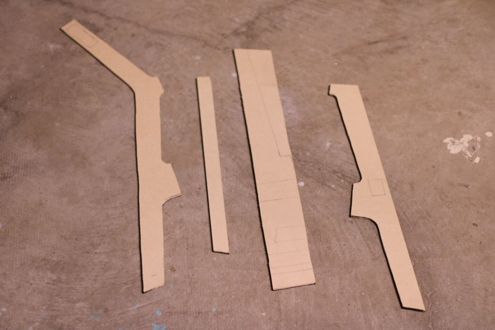
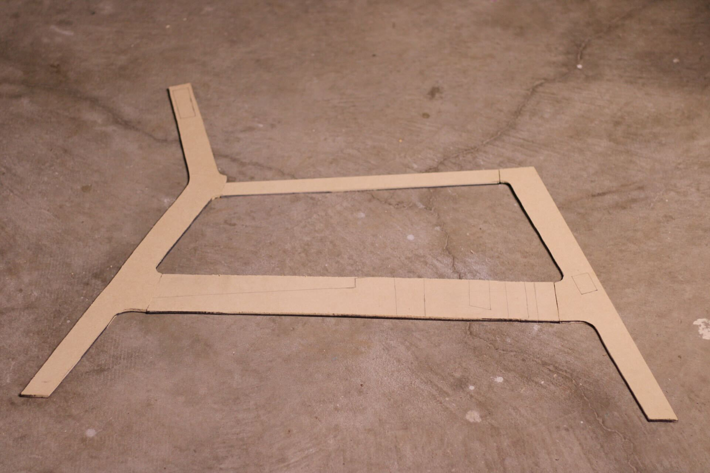
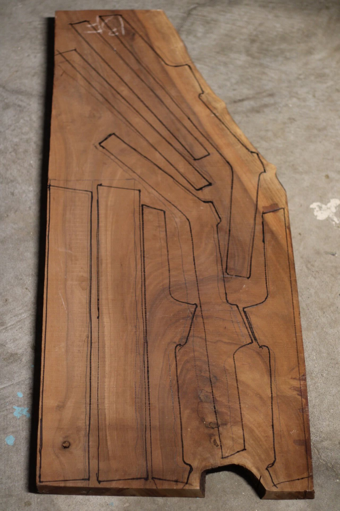
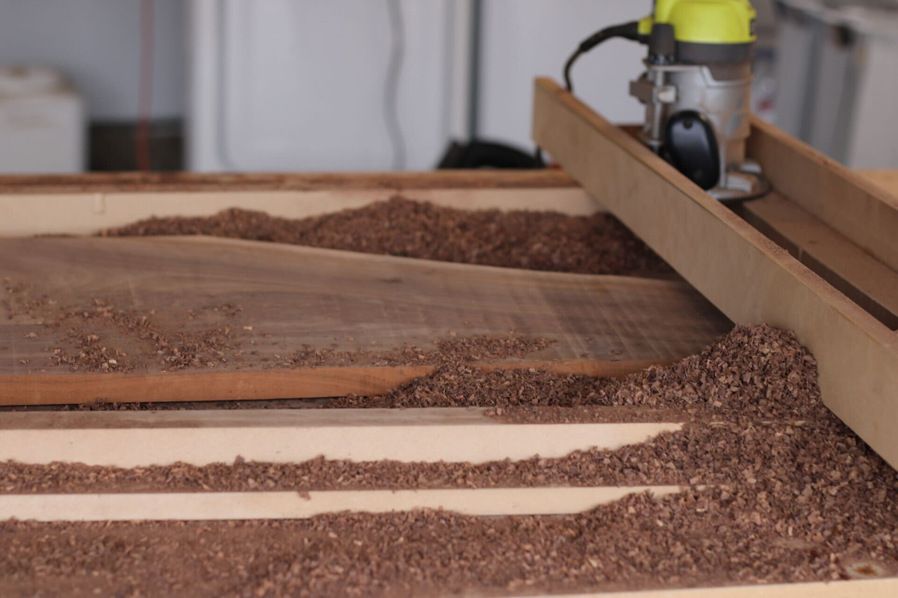
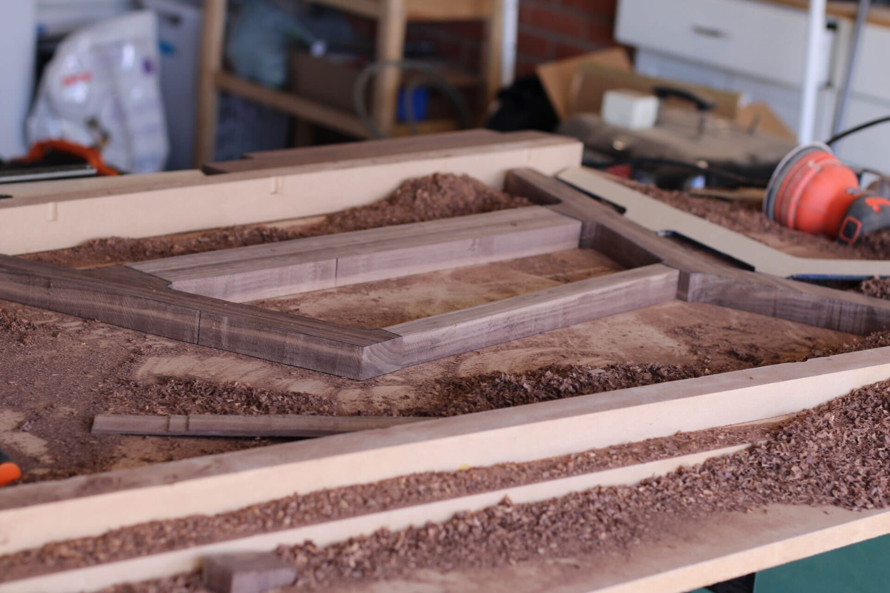
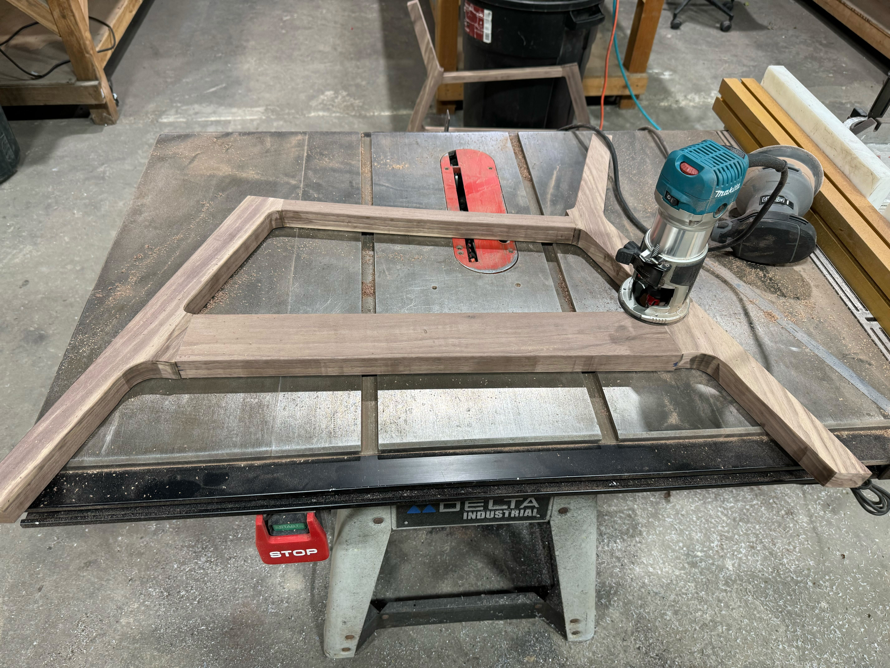

Making the Base
I decided I would start with the base and legs of the chair. I looked up inspiration online and drew out some templates on quarter inch mdf that I cut out with my jigsaw.


Template I drew out for the base of the chair.
After cutting out the templates I traced them onto the walnut to ensure that they would fit.

Tracing the templates onto the walnut.
Once I was sure the pieces would fit I milled down the board to six quarters of an inch. I had to build a routing sled for this since I didn't have a planer.

Routing sled I built to mill down the boards.
After milling down the boards I cut out the pieces using my jigsaw and did a test fit before I took them over to the routing table and uses a flush trim bit to get them exactly the same as the templates.


Finally I used dowels to joint the pieces and rounded over the edges.

With the base finished I could now move on to making the seat!